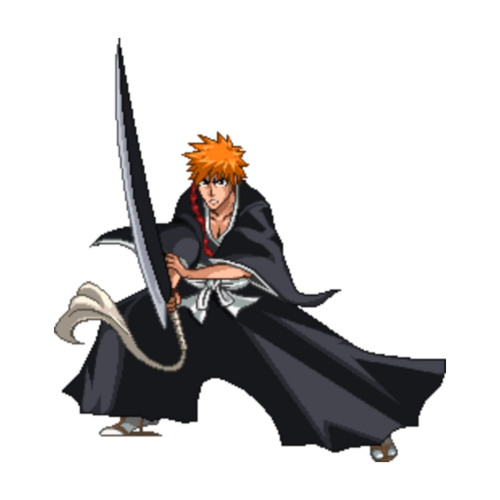

一護
黒崎一護は『BLEACH』の主人公で、死神としての力を持ち、虚（ホロウ）や強敵と戦う少年です。彼の持つ強大な霊力と、巨大な斬魄刀を使った戦いは圧倒的です。
特徴
- 一護本人より大きい剣判定があり、その上本人の身体能力も高い
- 大体の攻撃に背中まで武器判定がある
- DAの差し込み性能の高さや、一瞬消える時は回避判定がついている(空前も)
- 上Bの武器判定が最強でどの技でも判定勝ち出来ない
- 全体的に技の発生が遅く、至近距離戦になると分が悪い
- B技があまり強くなく、武器判定は強いものの想像より丁寧な立ち回りが求められる
- AK160選手(アメリカ)
強い点
弱い点
有名な使い手